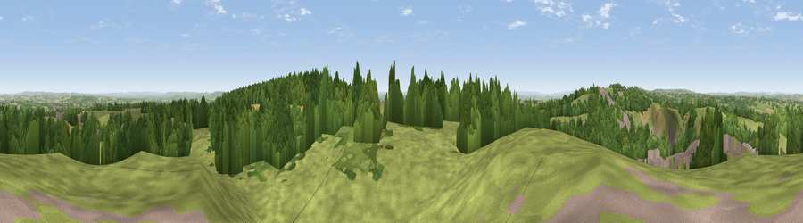

Viewpoint near Stoke St. Michael
#7355 in England · top 11% of its area beats it · near Stoke St. MichaelThe view, rendered

A 360° render of this exact spot computed from the terrain model, tree cover and land cover — summer colours, afternoon light, calibrated against photographs of famous viewpoints. Real trees, hedges and buildings will differ in detail.
The panorama
Grey silhouette: terrain skyline in each direction (720 bearings, Earth curvature and refraction included). Dashed green: skyline with trees (+15 m) and buildings (+8 m) as obstacles. Blue strip: how far the ground is visible on each bearing.
Where the view opens
Wedge length = distance to the farthest visible ground on that bearing (vegetation-aware). Rings at 10, 25 and 50 km.
What fills the view
51% grassland · 37% woodland · 9% cropland · 3% built-up ·
Angular shares of the visible panorama (visual magnitude), not map area. Landscape diversity 0.46 (0–1 Shannon).
Key numbers
More beautiful places nearby
The staircase of upgrades: each row has a higher view potential than everything closer. Driving times are estimates from straight-line distance, calibrated against real road routing — check an actual route before setting out.
| Place | Direction | Drive | Score |
|---|---|---|---|
| Viewpoint near Oakhill | W · 2 km | ~5 min | 71.3 |
| Viewpoint near Milton Clevedon | S · 9 km | ~18 min | 73.9 |
| Lamyatt Beacon | S · 9 km | ~19 min | 74.6 |
| Viewpoint near Lamyatt | S · 10 km | ~19 min | 77.8 |
| Beacon Batch | WNW · 21 km | ~36 min | 79.4 |
| Bleadon Hill [Loxton Hill] | WNW · 32 km | ~50 min | 79.6 |
| Cothelstone Hill | WSW · 49 km | ~70 min | 82.1 |
| Lewesdon Hill | SSW · 50 km | ~71 min | 83.3 |
51.20884, -2.48058 · source: screening · position refined by local search. Computed location — check access rights before visiting.